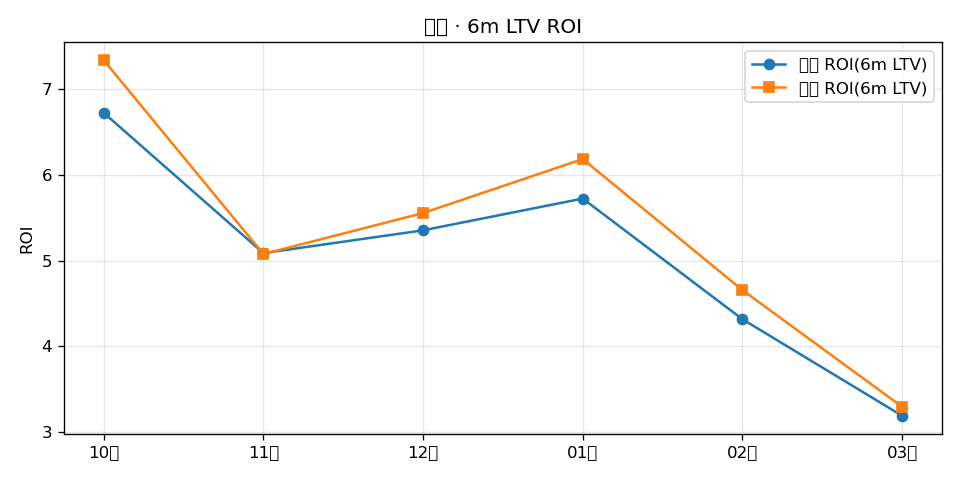
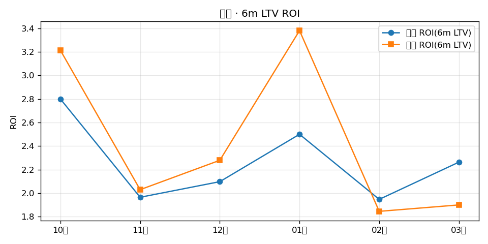
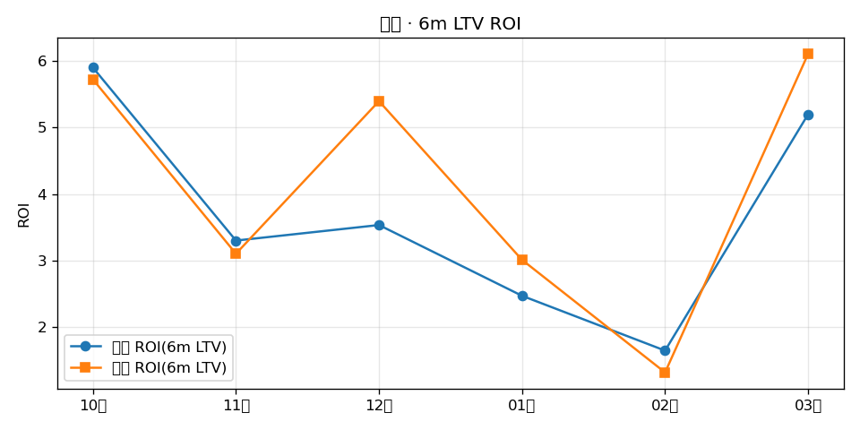
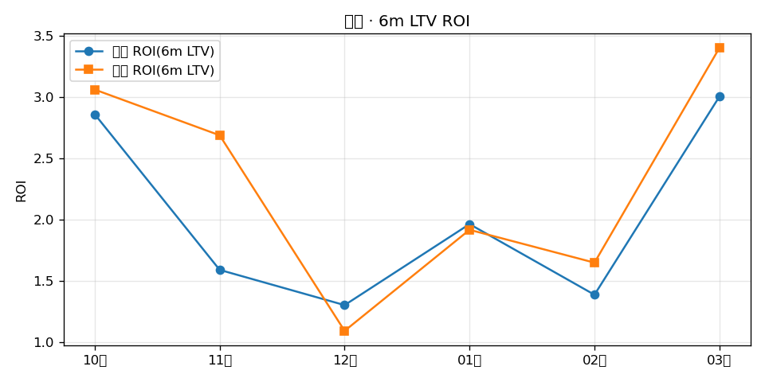

| 国家 | 6m ROI MAPE | 平均偏差 |
|---|---|---|
| 美国 | 5.4% | +5.3% |
| 印尼 | 13.9% | +6.8% |
| 越南 | 20.2% | +10.5% |
| 泰国 | 21.1% | +14.9% |
MAPE = 各月 |预估值 − 实际值| ÷ 实际值 的平均。平均偏差 带符号：正=整体高估 ROI，负=低估。
取数：hist ratio6 缓存 + 21d cohort 加权；t-21 消耗来自四国日耗 Excel（/Users/mac/Desktop/工作/草稿存档/四国花费）。
对比窗口：2025-10 ~ 2026-03 ｜ MAPE：5.4% ｜ 平均偏差：+5.3%

| Cohort月 | 实际 ROI | 预估 ROI | 差异 |
|---|---|---|---|
| 2025-10 | 6.73 | 7.34 | +9.1% |
| 2025-11 | 5.09 | 5.08 | -0.2% |
| 2025-12 | 5.35 | 5.56 | +3.8% |
| 2026-01 | 5.72 | 6.19 | +8.1% |
| 2026-02 | 4.32 | 4.66 | +7.9% |
| 2026-03 | 3.19 | 3.29 | +3.3% |
对比窗口：2025-10 ~ 2026-03 ｜ MAPE：13.9% ｜ 平均偏差：+6.8%

| Cohort月 | 实际 ROI | 预估 ROI | 差异 |
|---|---|---|---|
| 2025-10 | 2.80 | 3.21 | +14.8% |
| 2025-11 | 1.96 | 2.03 | +3.3% |
| 2025-12 | 2.10 | 2.28 | +8.7% |
| 2026-01 | 2.50 | 3.38 | +35.2% |
| 2026-02 | 1.95 | 1.85 | -5.2% |
| 2026-03 | 2.26 | 1.90 | -16.1% |
对比窗口：2025-10 ~ 2026-03 ｜ MAPE：20.2% ｜ 平均偏差：+10.5%

| Cohort月 | 实际 ROI | 预估 ROI | 差异 |
|---|---|---|---|
| 2025-10 | 5.90 | 5.73 | -3.0% |
| 2025-11 | 3.30 | 3.10 | -6.0% |
| 2025-12 | 3.53 | 5.40 | +52.9% |
| 2026-01 | 2.47 | 3.01 | +22.0% |
| 2026-02 | 1.64 | 1.31 | -20.1% |
| 2026-03 | 5.20 | 6.11 | +17.5% |
对比窗口：2025-10 ~ 2026-03 ｜ MAPE：21.1% ｜ 平均偏差：+14.9%

| Cohort月 | 实际 ROI | 预估 ROI | 差异 |
|---|---|---|---|
| 2025-10 | 2.86 | 3.06 | +7.0% |
| 2025-11 | 1.59 | 2.69 | +68.9% |
| 2025-12 | 1.31 | 1.10 | -16.1% |
| 2026-01 | 1.97 | 1.92 | -2.4% |
| 2026-02 | 1.39 | 1.65 | +18.8% |
| 2026-03 | 3.01 | 3.40 | +13.2% |